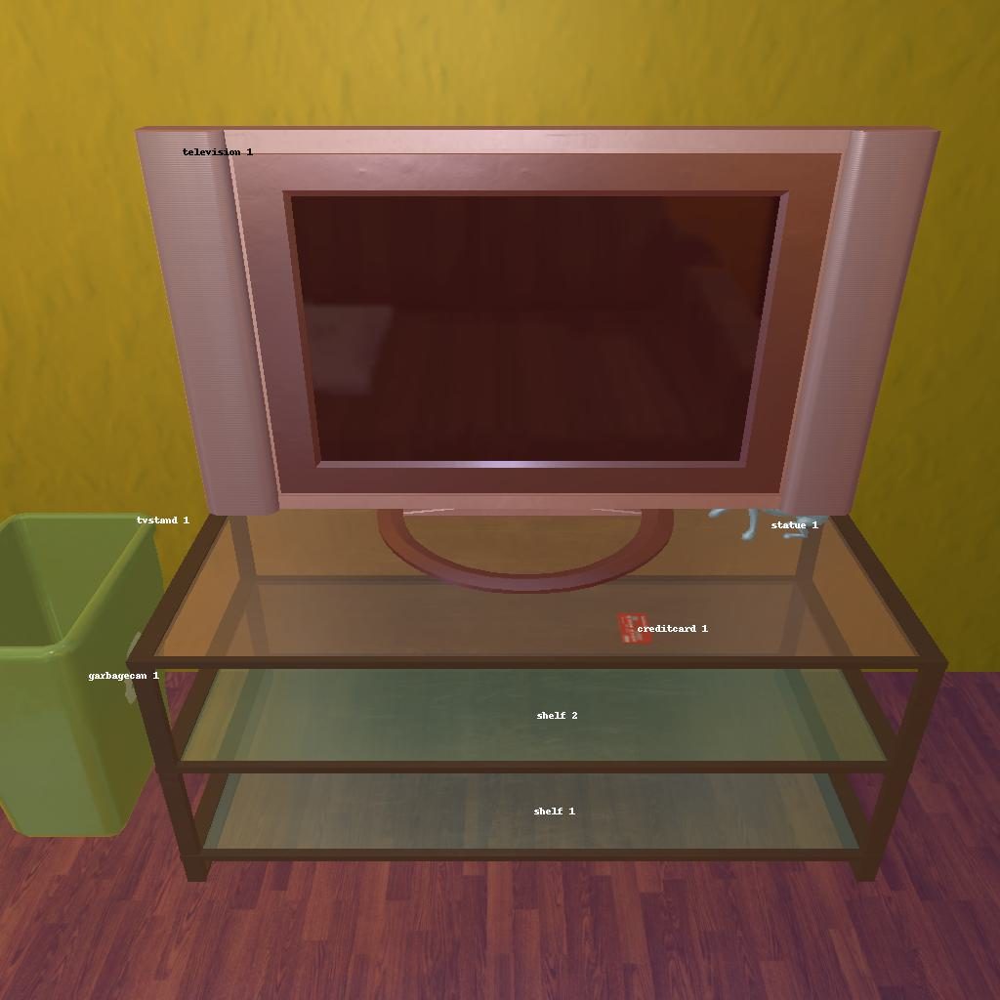

---------------------------------------------------------task: 3---------------------------------------------------------
--------------------------------------------------------------------------------------------------------------------------------------------------------------------
--------------------------------------------------------------------------------------------------------------------------------------------------------------------
Step:--------------------------------------------------------------------------3-------------------------------------------------------------------------------
----------------------------------------
VLM Prompt:
Image1:
Image2:
**Instruction**
1. Analyze the provided image to identify all visible household objects, focusing on those relevant to the task description "examine the plate with the floorlamp."
2. Use the analysis of the image and the task hint "The agent must find an object of the desired type, locate and turn on a light source with the desired object in-hand." to answer the question: what is the most reasonable action in the choices for the task description "examine the plate with the floorlamp"?
4. Decide and write the answer using the template: The answer is: (i): , where i is the real number. If there is no desired object in the image, search every place based on **Initial Observation** to find the object. And if no one is exactly correct, choose a similar answer.
**Initial Observation**
You are in the middle of a room. Looking quickly around you, you can see armchair (1), garbagecan (1), tvstand (1), shelf (1-5), sofa (1), coffeetable (1), sidetable (1-2), drawer (1)
**Answer Choices**
(1): go to armchair 1
(2): go to garbagecan 1
(3): go to tvstand 1
(4): go to sofa 1
(5): go to coffeetable 1
(6): go to sidetable 1
(7): go to sidetable 2
(8): go to drawer 1
(9): go to shelf 3
(10): go to shelf 4
(11): go to shelf 5
(12): take television 1 from shelf 2
(13): take statue 1 from shelf 2
(14): take creditcard 1 from shelf 2
(15): examine shelf 2
**Answer**
Let's think step by step by following the instructions.
----------------------------------------
----------------------------------------
Original Response:
First, we need to identify all visible household objects relevant to the task description "examine the plate with the floorlamp." In the images provided, there is no plate or floorlamp visible. However, based on the initial observation, we have a list of household objects in the room.
Since the task is to examine a plate with a floorlamp, we first need to find the plate. The plate could be on various surfaces like a coffeetable, sidetable, shelf, or drawer. After locating the plate, we would need to find a floorlamp to examine it with, which could be standing next to any of the furniture pieces mentioned in the initial observation.
Looking at the answer choices, none of them directly point to a plate or a floorlamp. However, since plates are commonly found on surfaces where food and drinks are placed, like coffee tables or shelves, we should prioritize checking these areas.
The most reasonable action from the choices provided, keeping in mind the task description and initial observation, would be to search the shelves, as they are the most likely place to find a plate based on standard household organization. Since we don't have a specific hint towards which shelf the plate is on, we should start with the lowest number and work our way up.
The answer is: (9): go to shelf 3. If the plate is not found there, we would continue to search the other shelves and surfaces mentioned in the initial observation.
----------------------------------------
----------------------------------------
>>> Refine Original VLM Response and Get Pure Action: go to shelf 3
----------------------------------------
-----------------------------------------------------------------
Running time: 13.84932565689087 seconds
Total Money: 1.24895
-----------------------------------------------------------------
-----------------------------------------------------------------
Text Observation:You arrive at loc 10. On the shelf 3, you see a statue 2.
-----------------------------------------------------------------
UNSUCCEED